Meta Global AI Developer Hackathon 2026 · Indie track · Build for Your World
An AI should weigh the evidence
before it fines anyone. तुला
TULA checks automatic toll bills before they are sent. If the evidence is strong, it charges. If not, it waits for another camera or asks a person. And it keeps a written promise: at most 5 wrong bills in every 100, in fog as well as sunshine.

01 · The problem
Nobody checks the bill
India is switching to toll roads with no barrier. Cars drive under a camera at full speed and a bill follows automatically. It is fast, but no person ever looks at that bill before it is sent.
Software turns the photo into text, like MH12AB1234, and bills that car's owner or the owner of its FASTag.
Read 1234 as 1284 and someone who was never there gets the notice. In India it doubles after 72 hours. Swapped FASTags and cloned plates do the same on purpose.
Today's systems charge when the model is "90% sure". Being sure is not being right, and nobody can tell a driver how many innocent people that rule bills.
02 · How TULA works
Four steps between the camera and the bill
Two Meta AI models look at the photo. Plain code checks what they saw against the records. A small statistical rule makes the call.
Meta SAM 3.1 finds the number plate and the car in the photo, just from the words "license plate" and "vehicle".
Two readers read the plate without seeing each other's answer. One is Meta Muse Glimmer 30B, which also sees the car's make, colour and type.
Do the reads agree? Is the FASTag this car's? Does the car look like the registered one? Every "no" adds doubt.
Charge if the doubt is low enough, hold for the next camera if it is close, or send to a person with a written reason.
03 · The idea that makes it safe
You choose the promise. TULA finds the line.
How much doubt is "low enough"? TULA does not guess. You set a promise, for example at most 5 wrong bills in 100. TULA looks at past cars whose right answer is known and finds the highest doubt it can accept while still keeping that promise.
It does this separately for fog, clear light and each kind of plate, because a model that is careful in fog can be over-confident in sunshine. If a group has too few checked cars to make the promise, TULA never charges it automatically.
The maths is called conformal risk control. It comes with a proof, and it works no matter which AI model does the reading.
04 · Results
Tested on 1,050 real plate photos
The photos and both models' answers are real. The FASTags and the vehicle registry are simulated, because no public data links them. Averaged over 200 random trials, with a promise of at most 5 wrong bills in 100.
We also attacked it: with fake cars carrying cloned plates and swapped FASTags taking up to 30% of traffic, TULA's wrong bills stayed under the limit the maths allows, while today's rule reached 42%.
05 · See it working
Two demos, both on the real results
Both run in your browser. No sign-up, nothing to install.
Set the promise
You run the toll road. Choose how many wrong bills you will accept, and watch TULA redraw its line for fog, clear weather and Indian plates.
- A slider for your promise
- What happens to every car, live
- Why one "90% sure" rule fails
Follow one car
Pick a real photo and see each step: what SAM 3.1 found, what each reader read, the evidence, and TULA's decision with its written reason.
- 29 real passages
- Both readers side by side
- TULA vs today's rule, per car
06 · Built with Meta
Open models, a laptop and free GPUs
SAM 3.1
Finds the plate and the car from text prompts, with no detector training. Found a plate in 247 of 248 foggy photos; the detector used before found 207.
Muse Glimmer 30B
Meta's official 4-bit weights in llama.cpp. Reads plate, make, colour and type, and says "cannot read" in fog instead of guessing: 91% exact on clear photos against 71% for an open-source reader.
Because both are open weights, a toll operator could run all of TULA at the plaza, without sending photos of people's cars anywhere.
07 · Honest limits
What the scale cannot see
- FASTags, the registry and the attack mix are simulated. The photos and both readers' answers are real.
- The open-source plate reader is a stand-in. It is not the system any Indian toll operator uses.
- The two readers often fail on the same photos, so the second reader adds less than hoped.
- A copied plate on a car of the same make and colour cannot be caught from one photo. It stays inside the attack limit, but catching it needs evidence across plazas.